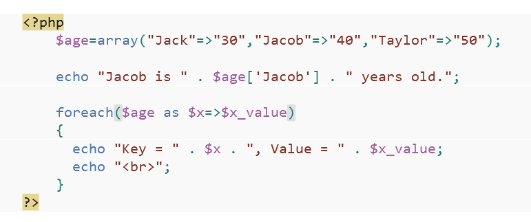

This was an interesting exercise as I love dabbling in different ways to develop webpages or applications and how to serve that to a user. I had mainly used visual studio before this, but really enjoyed using WebMatrix. It wasn't the easiest to use in the beginning and at times seemed a little slow, but as I got used to it using it became easier. I think it was just foreign to me at first.
I had originally decided to use WebMatrix as I was working on a project that required using an API that returned xml and the code examples used php - I needed a remote server that could handle the php page. In the end, however, the xml was converted into JSON server side using Ruby on Rails for the project. So I converted this page to a side project to learn a bit about php and using WebMatrix to deploy to Azure.
WebMatrix supports a large number of open source content management systems and provides a lightweight web development application for PHP and simplified ASP.NET Web Pages. It focuses on a clean, simple user interface allowing web developers to build websites from scratch or by customizing open source web content management systems such as Orchard, DotNetNuke, Umbraco, Joomla!, Drupal and WordPress, among others.
It was really straight forward deploying my page to Azure using WebMatrix. The only hickup was that I needed to change a couple of the config settings and basically set up my page as the index page (landing page).
So I had heard about php, but didn't realise that instead of using a .html page you use a .php page instead and need a server that can interpret php pages. So that was really interesting. I've also enjoyed looking at php as a programming language. This is the wiki definition of php:
PHP is a server-side scripting language designed for web development but is also used as a general-purpose programming language. As of January 2013, PHP was installed on more than 240 million websites (39% of those sampled) and 2.1 million web servers. PHP code can be simply mixed with HTML code, or it can be used in combination with various templating engines and web frameworks. PHP code is usually processed by a PHP interpreter. After the PHP code is interpreted and executed, the web server sends resulting output to its client, usually as part of the generated web page; for example, PHP code can generate a web page's HTML code, an image, or some other data.
Some lines of php code used on my Azure page:

I am always amazed at the depth to everything I touch on and I really feel like I've only scratched the surface with what WebMatrix and php can do and I look forward to building bigger projects in the future.
References: Wikipedia - help explain WebMatrix and PHP.